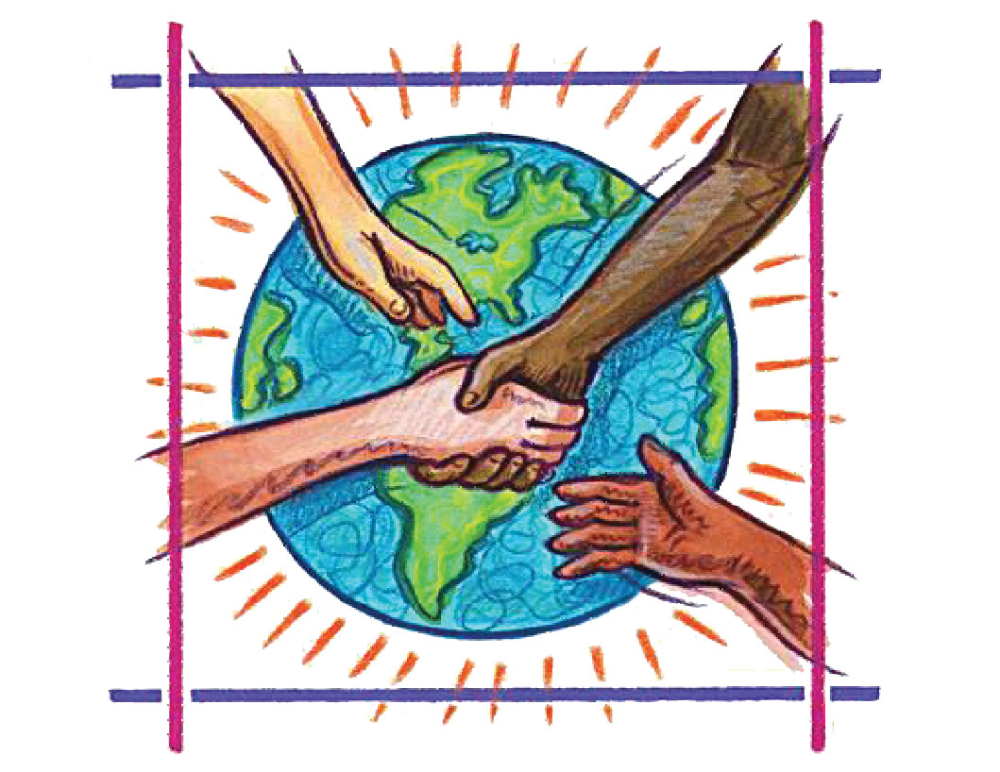

We Patricians, inspired by the life of Jesus Christ, rise to proclaim His option for the poor. We hold all of creation to be holy and worthy of reverence. Its song of praise is spoiled only by sin. We dedicate ourselves to restore right relationships to our world by compassion and action for justice.
Like Daniel Delany, we refuse to separate our faith from life. Through life-giving Brotherhood and prayer, we strive for a union of hearts and minds which will transform us and lead us to witness and service. We set ourselves firmly against whatever may cause injustice. We tend to the marginalized and in so doing, glorify our Creator-God.
We resolve to carry forward the enduring educational initiatives of our forebears and the newer ministries of our apostolate. But we will test them all, for their benefit to the poor and for justice' sake. Wherever we are, we will promote wholeness, welcome and self-worth.
As the future unfolds, our hope remains secure. Because our call is for service, we are ready to venture, risk, even fail, that some good might take hold, that some hope might be shared and that the poor might have their voices heard.
